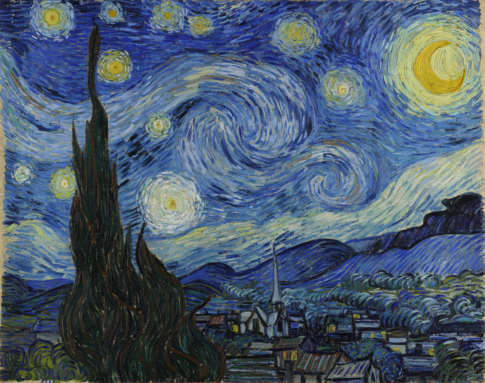

Rethinking Depression:
From Malfunction to Social Navigation?
The Social Navigation / Niche-Change Hypothesis (SNH) proposes that some episodes of severe depression are not just breakdowns of mood control, but a risky, high-gain strategy sometimes recruited when a person is trapped in an untenable social niche and ordinary negotiation has failed.
SNH is not a claim that “depression is good for you,” or that all low mood or major depressive disorder is adaptive. Many episodes are likely misfires, driven primarily by disease, drugs, neurodegeneration, or evolutionary mismatch. The hypothesis is intentionally narrow: it targets a specific trigger class of depressive episodes that may nevertheless be surprisingly common in both traditional human societies and modern social ecologies.
SNH proposes that both minor depressive states and a particular “high-gain” depressive mode are recruited under specific conditions:
- Non–point-source entrapment - stuck in a web of obligations and vetoes enforced by multiple partners, not a single villain.
- A better niche is visible but blocked - a realistically better life configuration is in sight, but unreachable without cooperation.
- Ordinary bargaining has failed - requests and small adjustments haven’t moved the system.
SNH is a testable evolutionary model, not a poetic metaphor. This site lays out the hypothesis, its limits, and a research agenda designed to either support it—or falsify it—by confronting its predictions head on.
It predicts, for example, that in true “socioeconomic entrapment” depressions, remission should track concrete niche‑change events - documented concessions, exits, or new role commitments—better than it tracks time, generic support, or medication alone. It also predicts distinctive patterns of effort, motivation, and network dynamics that can be checked against real data.
Start here: three short entry points—Positive Case, Critiques and Responses, and Tests—each with optional but irresistible deep-dive Boxes.